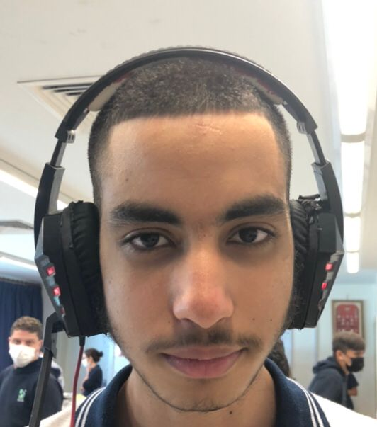
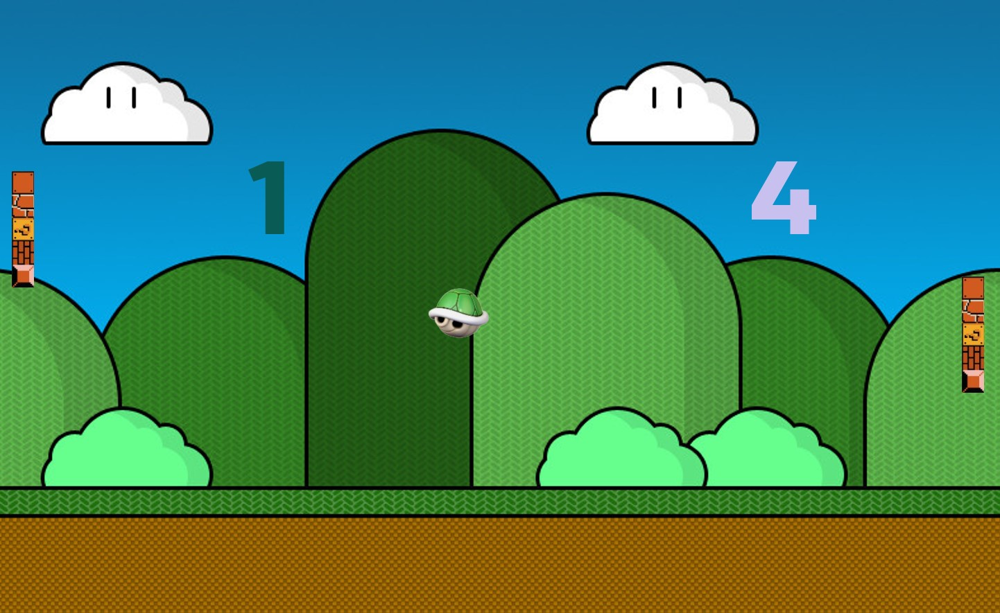
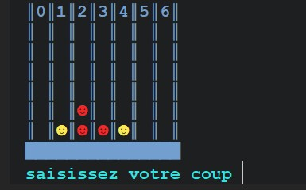
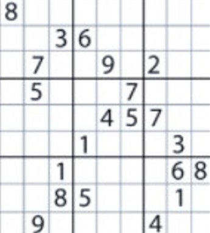
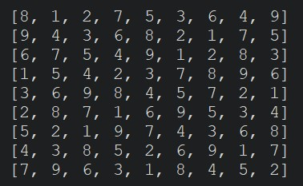

tic-tac-toe
pong
connect 4
solver sudoku
autres programmes
please agree to the terms and conditions
voici mon addresse mail si des femelles sont interresses
Dans ce site je vais montrer tout mes projets python de cette annee
ceci est un de mes premiers projets de nsi cette annee.
c'est un tictactoe.
ce programme consiste a renvoyer une matrice de 0 et de 1 qui correspondent a X et O grace a un programme affichage. Apres grace a un programme de saisie nous avons pu saisir la case ou l ont peux mettre notre X ou O. Puis finalement avec un programme victoire nous avons verifie si un joueur a gagne.
voici le programme
Un des projets les plus long de cette annee est celui du pong grace au module pygame.

ce programme marche grace au sprite qui sont controllable a la souris, d une balle allant vers des sens aleatoires et finalement une IA dont la difficulte est ajustable
voici le programme
Le projet de connect 4 etait un des plus interressant de l'annee, car c'est pratiquement un tic tac toe avec plus de casses et des jeton qui tombent.

ce programme marche comme le tictactoe, mais il ya un programme en plus qui fait tomber le jeton. evidemment les fonction victoire, saisie et affichage ont aussi ete change.
voici le programme
ce programme la est une des aplication du backtracking, ce programme va resoudre n'importe quel enigme de sudoku.
dans ce cas nous avons resolu une des enigmes de sudoku les plus compliques.


dans ce programme nous avons defile toutes les cases du sudoku puis nous avons essaye tout les nombres qui marchent dans la colonne grace a la programmation recursive
voici le programme
programme pythagore javascript
programme qui verifie si un triangle est rectangle
entrez la valeur ab
entrez la valeur ac
entrez la valeur bc
La majorite des programmes qu on a effectue cette annee se trouve dans ce lien
n'hesitez pas a ajouter plus de programmes dans ce document

Souhaitez-vous visiter la page 2 ?
{kind=link}
{kind=link}
{kind=link}
{kind=link}